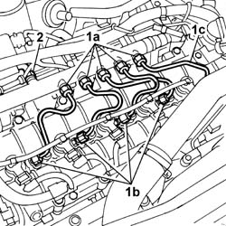
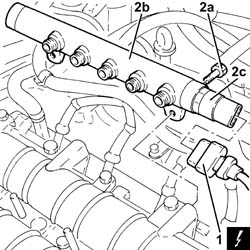
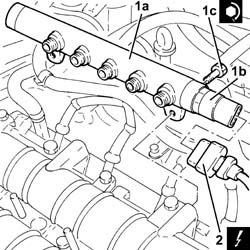
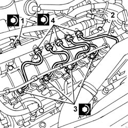

1060F30 SINGLE FUEL MANIFOLD PIPE - R.R.
- Path
- Procedures > 10 ENGINE > 1060 DIESEL FUEL INJECTION SYSTEM > 1060F INJECTORS AND LINES > 1060F30 SINGLE FUEL MANIFOLD PIPE - R.R.
- Kind
- repair procedure (removal / refitting; the operation number is the code)
- Applies to
- engines: 2.4 JTD 20V; all production periods
- Interactive page
- https://sloeber94.github.io/elrnDB-lThss/en/#/850534
Applies to: engines: 2.4 JTD 20V; all production periods
 Removing
Removing
 Refitting
RefittingSee in Op. 1016A10 SOUND-PROOFING COVER - R.R.
See in Op. 7040D50 ENGINE COMPARTMENT UPPER SOUND INSULATION SHIELD - R.R.
- Make sure that the ignition key is in the OFF position.
- Open the boot and disconnect the negative battery terminal.
1. Unscrew the connectors (1a) and (1b) and remove the pipes from the fuel manifold to the injectors (1c).
2. Undo the connector for the pipe from the pressure pump to the fuel manifold.

Applies to: engines: 2.4 JTD 20V; all production periods
1. Disconnect the electrical connection from the fuel pressure sensor.
 | Description | Connector |
|---|---|---|
1 | Fuel pressure sensor | K083 |
2. Undo the bolts (2a) and remove the single fuel manifold pipe (2b) complete with fuel pressure sensor (2c).

Applies to: engines: 2.4 JTD 20V; all production periods
Refitting
Removing1. Fit the single fuel manifold pipe (1a) complete with fuel pressure sensor (1b) and secure it tightening the bolts (1c) to the recommended torque.
 | Value - daNm | Fastening | Component | Ø |
|---|---|---|---|---|
1c | 2.5 | Bolts | INJECTOR FUEL MANIFOLD (DIESEL) | M8 |
2. Connect the electrical connection to the fuel pressure sensor.
| Description | Connector |
|---|---|---|
2 | Fuel pressure sensor | K083 |

Applies to: engines: 2.4 JTD 20V; all production periods
1. Tighten the connector for the pipe from the pressure pump to the single fuel manifold to the recommended torque using a spanner.
| Value - daNm | Fastening | Component | Ø |
|---|---|---|---|---|
1 | (manifold side) 2.3 | Connector | PRESSURE PUMP LINE TO FUEL MANIFOLD | M14X1.5 |
2. Fit the new pipes from the fuel manifold to the injectors and secure them without tightening the connectors.
3. Tighten the connectors for the pipes from the fuel manifold to the injector side injectors to the recommended torque using an ordinary spanner.
| Value - daNm | Fastening | Component | Ø |
|---|---|---|---|---|
3 | (injector side) 2 | Connectors | INJECTOR FUEL MANIFOLD PIPE | M12X1.5 |
4. Tighten the connectors for the pipes from the fuel manifold to the fuel manifold side injectors to the recommended torque using an ordinary spanner.
| Value - daNm | Fastening | Component | Ø |
|---|---|---|---|---|
4 | (manifold side) 2 | Connectors | PIPE FUEL MANIFOLD TO INJECTORS | M12X1.5 |

Applies to: engines: 2.4 JTD 20V; all production periods
- Connect the negative battery terminal in the luggage compartment.
See in Op. 7040D50 ENGINE COMPARTMENT UPPER SOUND INSULATION SHIELD - R.R.